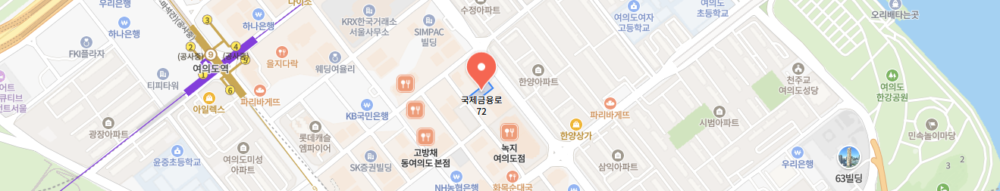

VISIT GUIDE
여의도기통찬
진료시간& 오시는 길
여의도기통찬의원의 진료정보에 대해 안내드립니다.
진료시간
- 09:00 ~ 20:00야간진료
- 09:00 ~ 19:00
- 09:00 ~ 14:00단축진료
- 13:30 ~ 14:30
- 진료 종료 30분 전 접수 마감입니다.
- 일요일 · 일반 공휴일 휴진입니다.
- 토요일 점심시간 없이 진료합니다.

오시는길
서울특별시 영등포구 국제금융로 72, 호정빌딩 4층
KB국민은행 동여의도점 건물 4층
주차안내자차 이용 시 : 본원 주차 또는 인근 주차장 안내·지원
지하철 이용 시
샛강역 1번 출구, 도보 7분
버스 이용 시
하나은행여의도지점 정류장
일반 261번 7611번